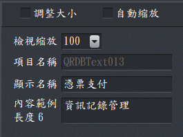

文件內容設計－公用區
此區域可以設定套印項目是否可以自動縮放、修改顯示名稱及內容示例。
- 套印項目縮放：
- 調整大小：當調整大小被選取時，套印項目就可以使用滑鼠直接拖拉大小，而「自動縮放」會關閉。
- 自動縮放：預設開啟，以便完全印出該項目。
- 備註：若要讓字串能在固定寬度內置中，請關閉自動縮放。
- 檢視縮放：設計文件時，可以調整檢視縮放比例。
- 項目名稱：系統自動賦予，無法修改。
- 顯示名稱：由使用者命名，便於識別與排序、資料處理、資料引用等。
- 內容範例：輸入模擬資料，便於檢視。
- 長度 0：自動計算內容長度，以便檢視設定。

公用區